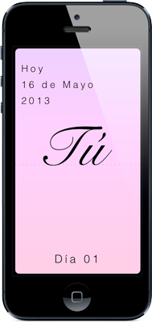

Un día en una palabra
Un día en una palabra
Muy pronto disponible para iPhone.
Word Diary requiere iOS 6.1 o posterior.
Desarrollado por Fernando Rodríguez Martínez (@_frodrig)
(c) 2013 Todos los Derechos Reservados
Word Diary es un bonito y sencillo diario minimalista con el que podrás escribir, cada día y los días que tu quieras, una única palabra.
¿Hoy ha sido un día especial? ¿un día triste? ¿emocionante? ¿inolvidable? ¿lleno de recuerdos? No hay nada más refinado y conciso que expresarlo con una palabra. Una palabra que, al leerla con el paso del tiempo, te volverá a llevar a todos esos momentos que guarda.
